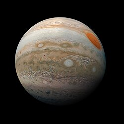
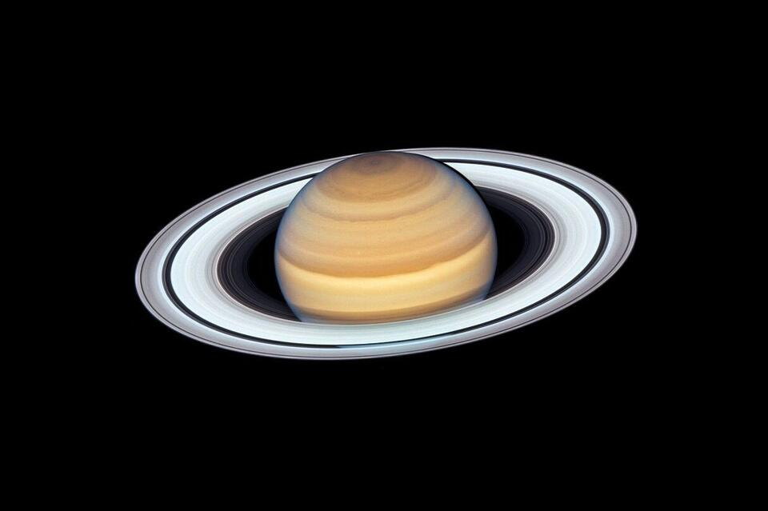
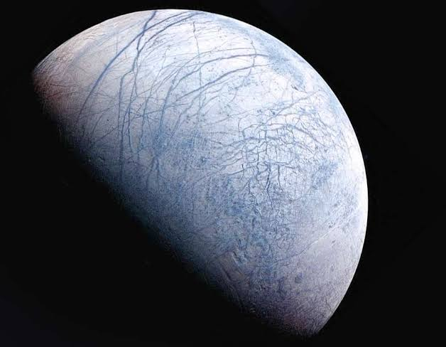
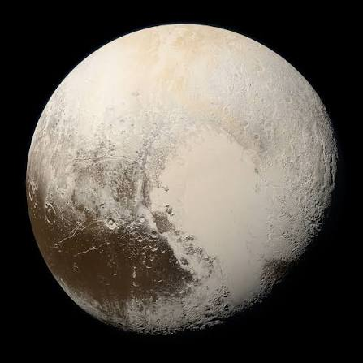
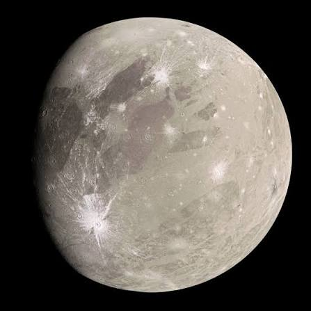
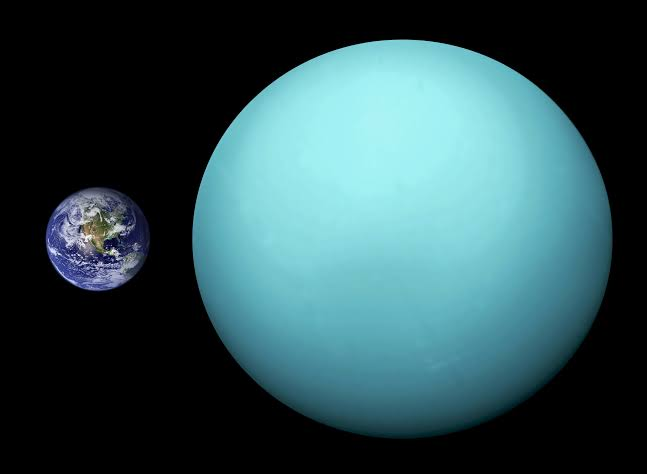
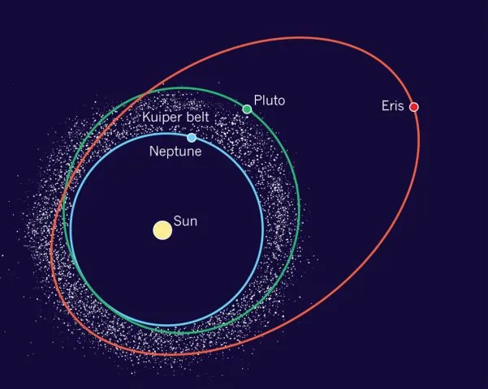

Крупнейший спутник в Солнечной системе диаметром 5268 километров. По своим размерам Ганимед превосходит планету Меркурий на 8%, хотя его масса составляет всего 45% от массы Меркурия.
Спутник был открыт Галилео Галилеем 7 января 1610 года с помощью первого в истории телескопа. Ганимед состоит примерно в равных пропорциях из силикатных пород и водяного льда. Под его ледяной корой толщиной около 150 км скрывается глубокий подповерхностный океан жидкой воды.
Ганимед является единственным спутником в Солнечной системе, обладающим собственной магнитосферой, которая создается конвекцией внутри жидкого железного ядра.

Ледяной гигант диаметром 50 724 километра, третья по диаметру и четвёртая по массе планета Солнечной системы. Была открыта английским астрономом Уильямом Гершелем 13 марта 1781 года, став первой планетой, обнаруженной в Новое время при помощи телескопа.
Главная особенность Урана заключается в том, что плоскость его экватора наклонена к плоскости орбиты под углом 97,77 градуса - планета вращается ретроградно, «лёжа на боку слегка вниз головой». Из-за этого день и ночь на полюсах длятся по 42 земных года.
Недра Урана состоят в основном из льдов (водяного, аммиачного и метанового) и горных пород. Именно метан в верхних слоях атмосферы поглощает красный свет и придаёт планете характерный голубовато-бирюзовый цвет.

Крупнейшая известная карликовая планета Солнечной системы диаметром 2376 километров. Открыта американским астрономом Клайдом Томбо 18 февраля 1930 года в обсерватории Лоуэлла и до 2006 года считалась девятой классической планетой.
В июле 2015 года космический аппарат «Новые горизонты» (New Horizons) впервые в истории совершил пролёт вблизи Плутона, передав детальные снимки его поверхности. Самой известной деталью рельефа стала обширная светлая область в форме сердца — регион Томбо, заполненный азотным и метановым льдом.